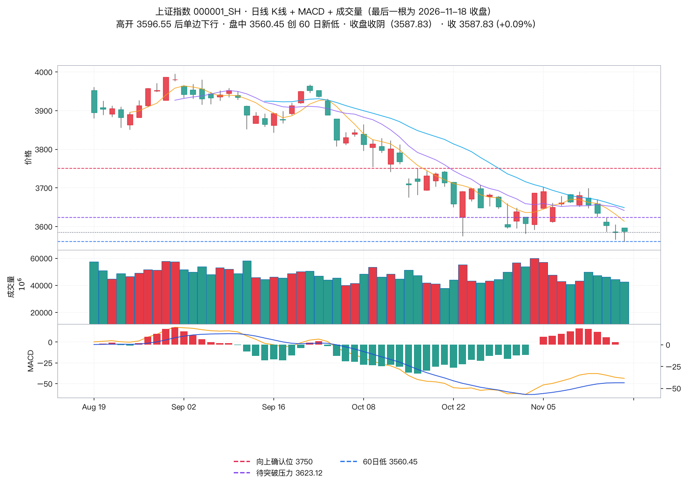
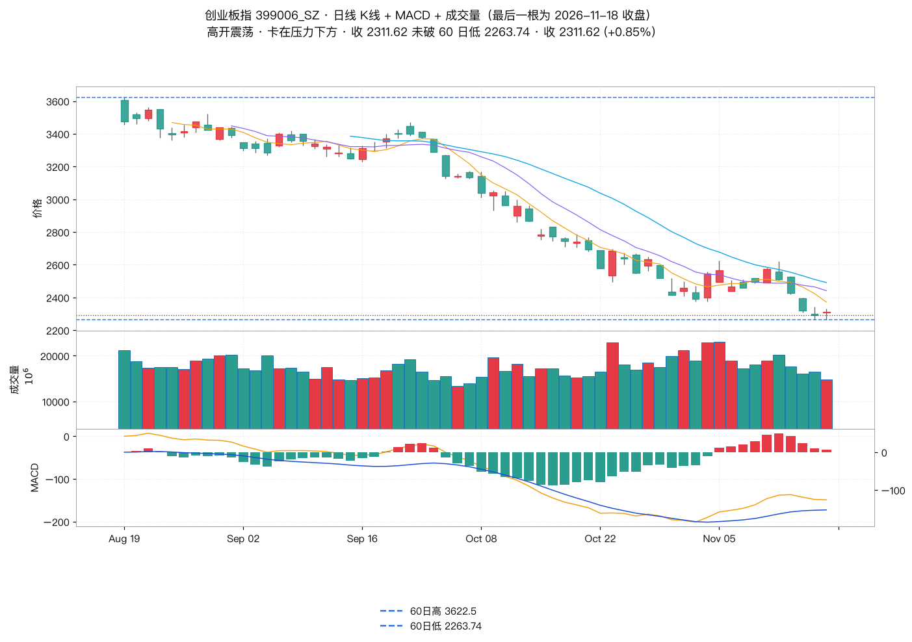
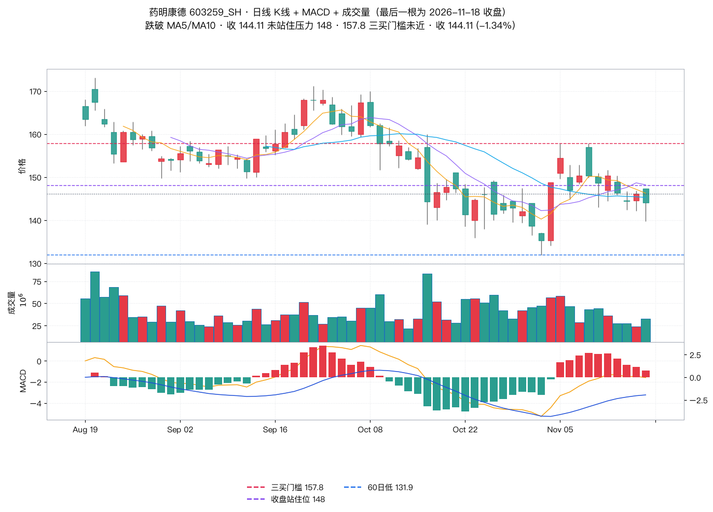
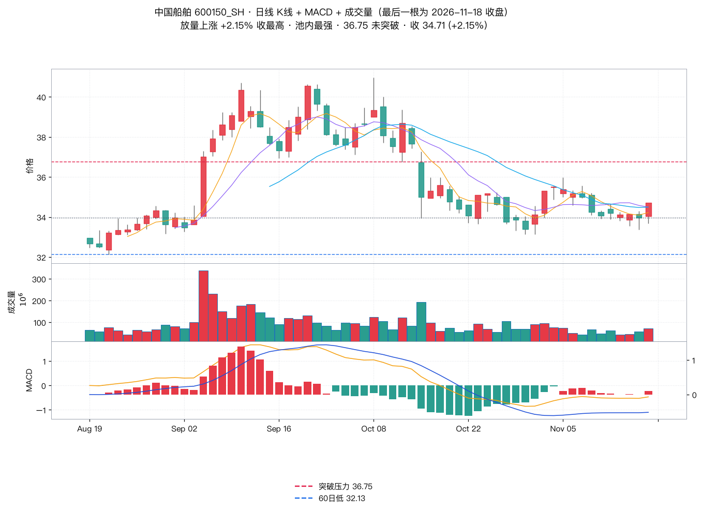
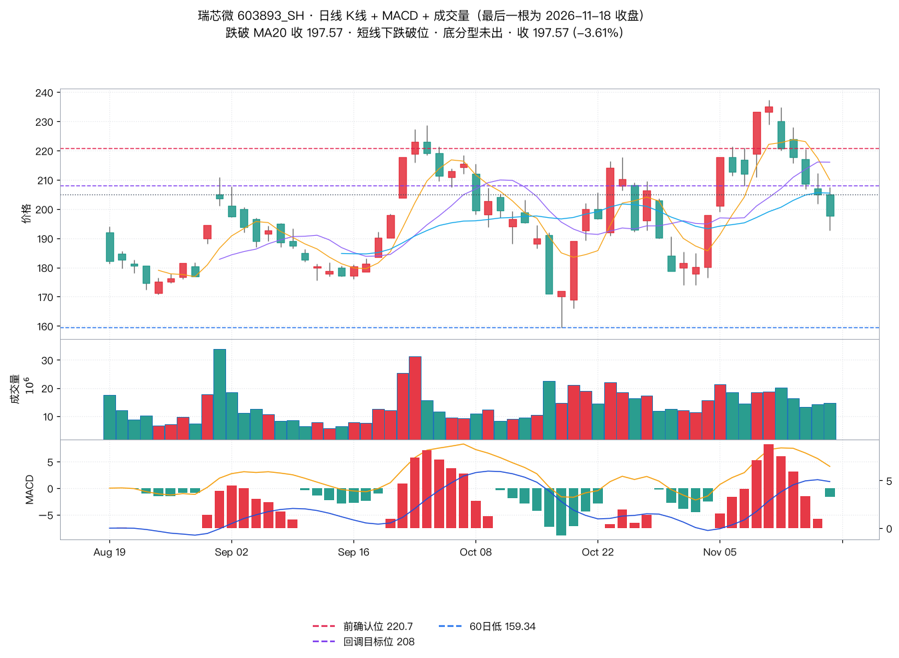
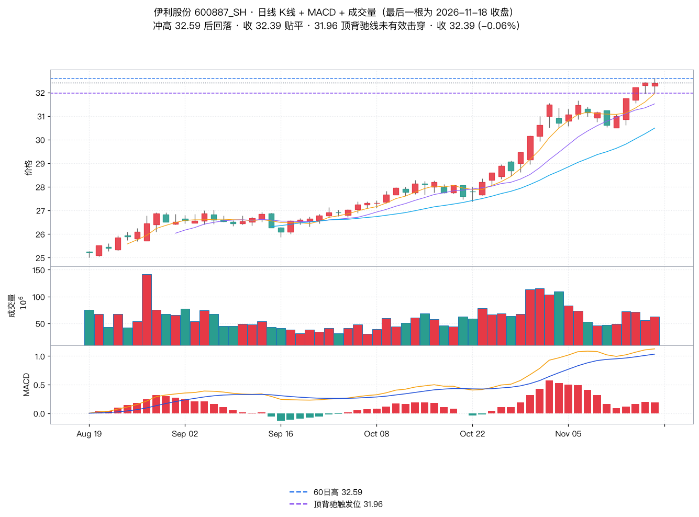
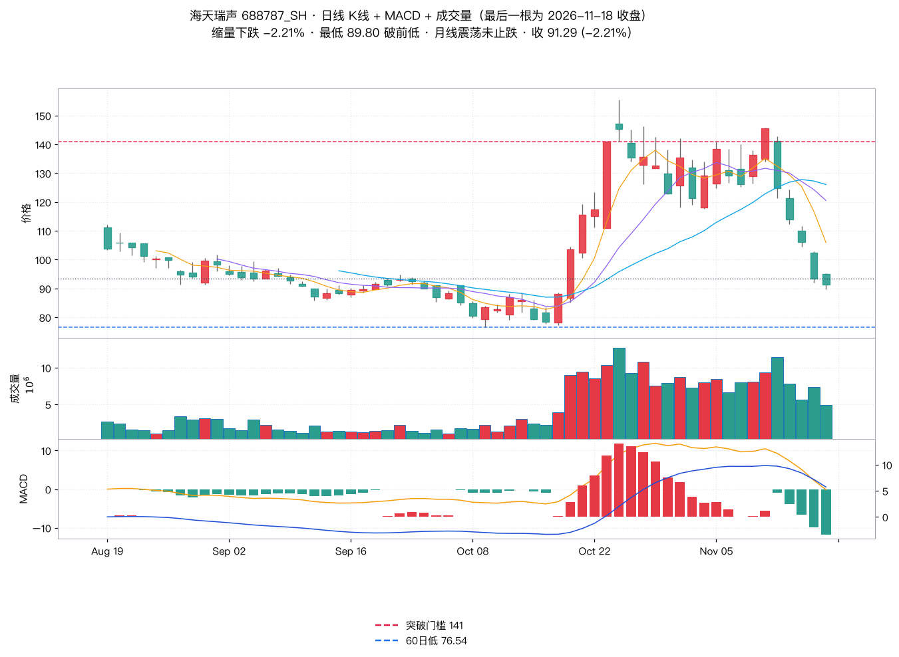
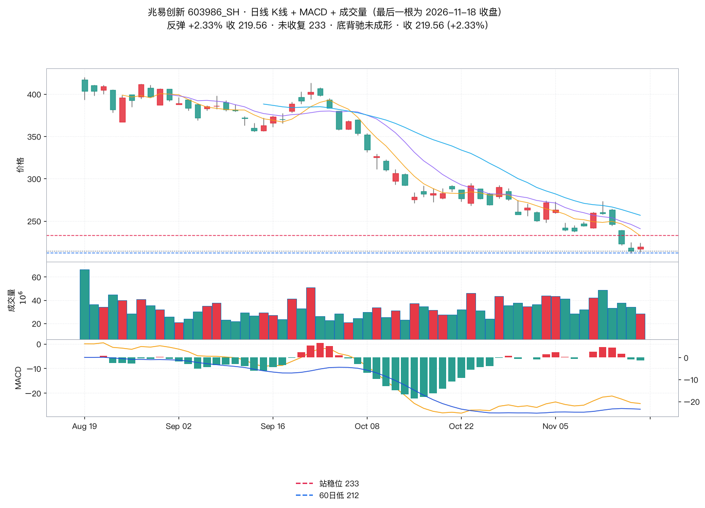
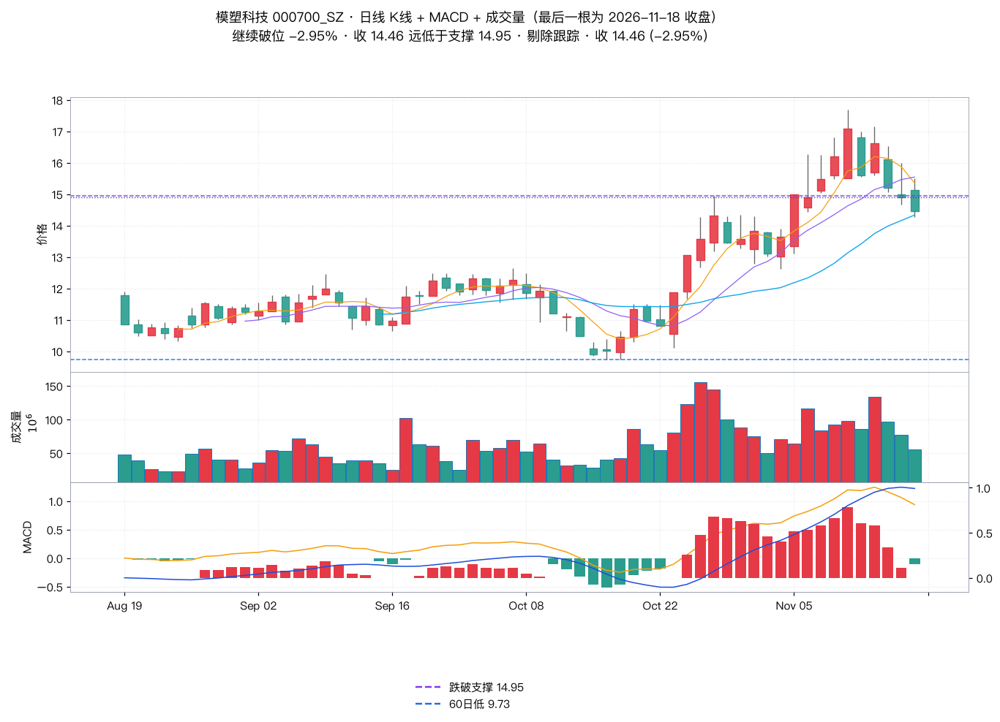
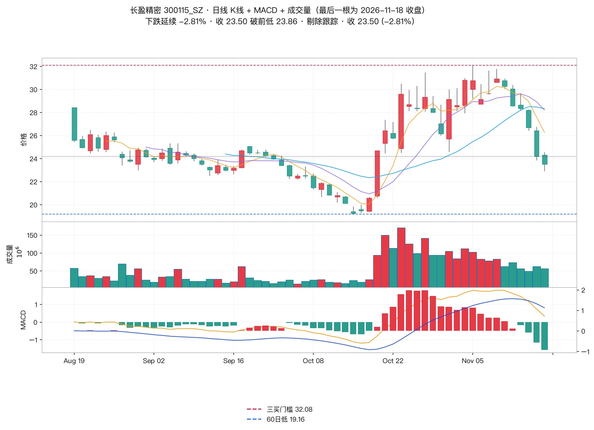

结论：高开阴线、盘中创 60 日新低；3623 未破 → 仍是下跌中枢震荡，总仓 ≤4 成、少动多看。 上证开 3596.55 既是最高也是开盘价，盘中最低 3560.45 创 60 日新低，收 3587.83 收在开盘价下方 = 阴线， 距压力 3623 差 26.45 点。跌家数 4132（74%）、涨停 41 vs 跌停 40。 池内 8 只全部无方法买点，模塑科技、长盈精密被剔除跟踪。
老师三个判据逐条对上：① 「高开后走势运行沉闷，盘中创出新低，收盘收出一根阴线」 —— 上证开 3596.55（高开 +0.33%）同时就是全天最高，开盘后没再冲高；盘中最低 3560.45，破 11/17 的 3565.59，是 60 日新低；收盘 3587.83 收在开盘价下方 0.24% = 阴线。② 「突破压力 3623 点后出分型回抽确认」 —— 今日最高 3596.55，差 26.45 点没触及，向上路径未打开。③ 「没有日线有力度底分型即没有止跌」 —— 收盘仍在 MA5 3613 / MA10 3641 / MA20 3648 三线下方。
结构上是指数收阴、宽度更差：跌 4132 家占 74%，跌超 5% 286 家、涨停仅 41 家、炸板 24 家；两市成交 13,697 亿环比 -6.04%，11:30 同时点同比 -11.38% —— 缩量阴跌、赚钱效应差，对应老师「市场弱时做好风控，少动多看」。创业板是唯一例外：+0.85% 收 2311.62，最低 2265.76 未破 60 日低 2263.74，仍在压力下方横住。


| 方向 | 老师口径 | 实测（东财概念 + 自建篮子） |
|---|---|---|
| 国产算力（华为链） | 老师：二类热点 · 国产算力 | 算力概念 +1.96%（主力 +87 亿，涨 162/跌 90）、东数西算 +2.99%（板块涨幅第一）、CPO 概念 +1.72%、华为昇腾 +1.66%；但华为概念整体 -0.03%（涨 262/跌 394） |
| 算力租赁 / IDC | 老师：算力租赁也有些表现 | 涨停池 IT服务Ⅱ 7 家 + 通信服务 5 + 计算机设备 3，美利云、城地香江、华胜天成、真视通、常山北明、卡莱特涨停 —— 集中在 IDC 与算力租赁 |
| 高股息 / 红利 | 老师：内部出现分化 | 公路 +1.63%、电力/高股息 +1.08%、家电 +0.75%、煤炭/石油 +1.02% 全线红；银行 -0.23%（涨 2/跌 2）掉队 |
| 饮料制造 / 白酒 | 老师：走势不太对劲，防范短线高点 | -2.21%（0 涨 5 跌）：欢乐家 -4.83%、李子园 -3.03%、东鹏饮料 -1.70%；白酒概念 -1.56%（涨 5/跌 36）、酿酒行业 -0.89% |
| 前期强势补跌 | 老师：算力若延续向下不一定顶得住 | AI视频/传媒 -2.80%（0 涨 7 跌，华策影视 -4.35%）、人形机器人 -2.57%（1 涨 8 跌，兆威机电 -5.33%） |
两条要记的：① 二类热点是国产算力，但「华为概念」这个口径本身没走出来 —— 算力概念 +1.96%、东数西算 +2.99%（板块涨幅第一）、华为昇腾 +1.66%，可华为概念整体 -0.03%、涨 262 跌 394 —— 真正强的是昇腾+算力租赁，不是「华为概念」这个大盘。算力租赁确有表现：涨停池里美利云、城地香江、华胜天成、真视通、常山北明集中在 IDC 与算力租赁，但老师明确「不要着急去追涨」。② 高股息分化比老师说的更明显 —— 银行 -0.23%（招商 -0.76%、兴业 -0.99%）掉队，而公路 +1.63%、电力 +1.08% 仍全线红 —— 红利内部不是普跌，是银行被单独抽走。饮料制造 -2.21%（0 涨 5 跌）、白酒概念 -1.56%，老师「防范短线高点」当天就兑现。
| 标的 / 题材 | 现价 | 老师定性（老师口径） | 关键位 | 实测印证（日线触达） | 动作 |
|---|---|---|---|---|---|
| 药明康德 603259 | 144.11 (-1.34%) | 不操作 · 等突破 157.8 出 15 分钟底分型三买；或止跌后出日线有力度底分型 + 收盘站住 148 | 157.8 / 148 | 收 144.11 -1.34%，最高 147.29 未触 157.8（差 10.51）、收盘未站住 148；最低 139.75 破 11/17 低 142.20，跌破 MA5/MA10 | 等 |
| 中国船舶 600150 | 34.71 (+2.15%) | 不操作 · 等突破 36.75 出 15 分钟底分型回抽确认 | 36.75 | 收 34.71 +2.15%，收在全天最高，量比 129%（池内最强）；距 36.75 差 2.04 元 | 等 |
| 瑞芯微 603893 | 197.57 (-3.61%) | 不操作 · 等日线有力度底分型（激进）；等共振或突破上沿出三买（稳健） | 220.7 / 208 | 收 197.57 -3.61%，最低 192.76 再破 208 与 220.7，跌破 MA20 205.45，底分型未出 | 等 |
| 伊利股份 600887 | 32.39 (-0.06%) | 不操作 · 不追涨，设好止损；有效击穿 31.96 = 顶背驰大概率成立 | 31.96 | 最高 32.59 创 60 日新高，收 32.39 -0.06% 贴平、量比 100%；最低 31.98，距 31.96 仅差 -0.02 元未击穿 | 不追 |
| 海天瑞声 688787 | 91.29 (-2.21%) | 不操作 · 先观察调整能否止跌，辅助 15 分钟二买 | 141 | 收 91.29 -2.21%，最低 89.80 破 11/17 低 91.99；量比 66% 缩量下跌，距 60 日低 76.54 还有 -15% | 等 |
| 兆易创新 603986 | 219.56 (+2.33%) | 不操作 · 等日线有力度底分型出现、收复 233 后的回抽三买 | 233 | 收 219.56 +2.33% 反弹，量比 78% 缩量；最高 224.44 差 8.56 元未收复 233 | 等 |
| 模塑科技 000700 | 14.46 (-2.95%) | 不操作 · 结构跌破支撑向下延续转弱，短线剔除跟踪 | 14.95 | 收 14.46 -2.95%，最低 14.27 远低于 14.95 支撑，量比 62% | 剔除 |
| 长盈精密 300115 | 23.50 (-2.81%) | 不操作 · 延续下跌破位、类二买结构不再，短线剔除跟踪 | 23.86 | 收 23.50 -2.81%，最低 22.89 破 11/17 低 23.86，量比 95% | 剔除 |








| 老师原文 | 实测 | 判定 |
|---|---|---|
| 老师：「二类热点：国产算力（华为概念）」 | 算力概念 +1.96%、东数西算 +2.99%、华为昇腾 +1.66%；但华为概念整体 -0.03%（涨 262/跌 394） | 方向对 · 口径窄 |
| 老师：「高股息内部出现分化，银行有些品种走不出去」 | 银行 -0.23%（招商 -0.76%、兴业 -0.99%）；而电力 +1.08%、公路 +1.63% 仍全红 | 分化成立 · 更强 |
| 老师：「兆易创新内部有做 1 分钟下跌中枢迹象」 | 今日实测反弹 +2.33%、量比 78%，未收复 233 | 无法核验 |
| 老师：「伊利今日顶背驰没出现，但力度放不出来」 | 最低 31.98 距 31.96 仅 -0.02 元，收盘贴平、量比 100% | 精确命中 |
来源：都业华《高级班》2026-11-18 收评，执业编号 A0400626100004。仅供参考，不作为买卖依据，据此操作风险自担。投资有风险，入市需谨慎！历史案例不代表未来收益。
口径：同花顺日线 141 根（今日那根用收盘快照补齐）+ 新浪收盘快照；成交额＝上证指数额＋深证成指额，环比取 11/17 同口径；涨跌家数取新浪全 A 5579 只 15:00 快照；涨停/跌停/炸板用东财池；板块为东财概念板块 + 自建篮子均值。关键位一律用日线触达判据（当日最高/最低 vs 关键位）。